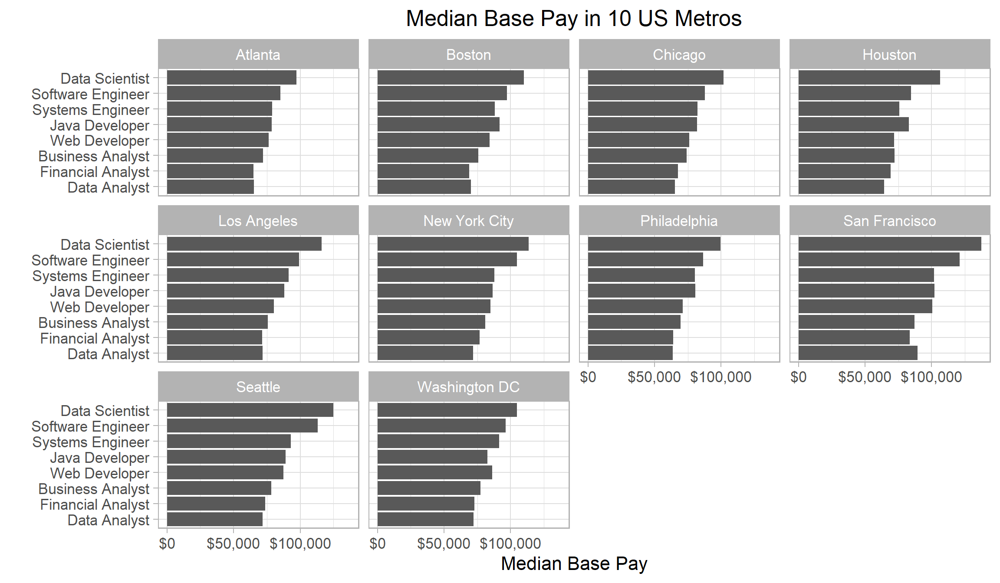

Chapter 5 Results
5.1 US labor market: Data related jobs vs. others
The horizontal bar chart shows the jobs in the US with median base pay higher than ~60k. The base pay of each job is the average salary between Jun 2017 and Mar 2019.

It can be seen that pharmacists, solution architects and attorneys have the highest median base pay. Besides, most of job titles in this graph contains “manager”, “engineer” or “analyst”.
In fact, there are 38 jobs in the graph, and at least 8 of them are highly related to IT industry. This report mainly focuses on data scientists (DS), data analysts (DA), business analysts (BA) and financial analysts (FA), because they are the jobs that are most relevant to data science program. All of the four jobs have something to do with data, but their base pay varies. To be specific, in the Unites States, data scientists have much higher salary than DA, BA and FA.
This pattern surprised us, because we thought these jobs are similar and they should have the same salary level. Is this just a national pattern? Can we still observe this pattern locally?

This graph can confirm our findings! It shows the base pay of eight IT jobs in ten metropolises. We removed other jobs which we are not interested in.
The previous pattern is still true in this faceted bar chart. Generally speaking, in all of the ten metropoises, data scientists have the highest salary, while BA, FA and DA have the lowest. Why does this happen?
We did some research and tried to explain this pattern. In the article, Data Analyst vs. Data Scientist, Leigh Kunis compares the differences between DS and DA. She thinks data analysts can be considered as junior data scientists. The former focuses on basic data analysis and visualization. Data scientists, however, have to do some more profound data analysis. They need to grasp machine learning skills. They also need to know how to clean data, build algorithms, design experiments and present the results. In conclusion, data scientists’ work is more complicated and comprehensive.
As for financial analysts and business analysts, they need to know more domain knowledge than pure data analysts, so their salary is slightly higher than DA. Yet their analysis is still not that profound, which makes their salary lower than data scientists. In the later part, we scraped some job descriptions from Indeed and used basic NLP techniques to prove our explanation.
Based on this pattern we found, we suggest that DSI students should look for a DS job instead of a DA job.
Another pattern is that, the 8 IT jobs in this faceted bar chart are clearly divided into 4 clusters. The first cluster is the job ending with “scientist”; this cluster has the highest base pay. The second cluster is the jobs ending with “engineer”; this cluster has the second highest salary. The third cluster is the jobs ending with “developer”; its salary is the third highest. The last cluster is the jobs ending with “analyst”; its salary is the lowest among the 8 IT jobs.
This pattern is not counterintuitive at all, since there is a natural order: scientist > engineer > developer > analyst.
5.2 Trends of data related jobs
The line chart shows the salary of eight IT jobs in the US from Jun 2017 to Mar 2019.

The graph of time series can again prove the pattern we found before. That is, from Jun 2017 to Mar 2019, the salary of DS is much higher than DA, BA and FA.
It can also be shown that the salary of each job does not change too much since Jun 2017. Two jobs that fluctuate the most are data scientists and Java developers. The salary of software engineers and data analysts increases steadily in this period.
In addition, the lines representing web developers and business analysts have several crosses, while the relative position of other jobs remains unchanged.
To have a clearer view of the salary change of the data related jobs, we scaled the data and drew the line chart below.

In this graph, the value of the first data point is scaled to 100, and the trend of salary is magnified. In addition, the median base pay of the US is added to this graph. It can function as a reference.
Cyclical trend: To help us recognize the cyclical trend, the tick mark labels of this graph are the first month of every quarter. However, We can hardly observe any cyclical trend, perhaps because the time span is too short.
Secular trend: Generally speaking, every median base pay slightly increases. 2017/10 - 2017/11 seems to be a bad time when the median base pay of most jobs are the lowest. However, since 2018/08, the overall salary steps up to a higher level.
The salary of DA fluctuates a lot, and it “greatly” drops since the beginning of 2019. The salary of DA has the best momentum, since it has the highest growth rate in 2019. The trends of BA and FA are very similar, and they are similar to the trend of US median base pay.
Since the absolute value of DA’s salary is the lowest, so it’s not strange that DA’s salary has the highest growth rate. Similarly, the absolute value of DS’s salary is very high, so it’s natural that the salary drops a bit. Since BA and FA are similar, it’s reasonable that there trends are similar.
So far we have analyzed in detail the trend of median base pay in the national level. What about the city level?

This faceted line chart shows the change of salary in 10 metropolises from Jun 2017 to Mar 2019. Overall speaking, the change of 4 data related jobs’ salary is very small. However, it seems that the salary of DS in Houston fluctuates the most.
Obviously, the overall salary in San Francisco is the highest. This is expected because of the big techs in the Silicon Valley.
The interest thing is that the salary of DA, BA and FA in Seattle and DC is almost the same, but the salary of DS in Seattle is much higher than that in DC. We guess seattle has more big companies, such as Amazon, Boeing, Mircosoft, etc. In fact, Seattle is also the nation’s fastest growing tech hub.
To have a clearer view of the change over time, we scaled the data and drew the following graph.

In this graph, the value of the first data point is scaled to 100. In addition, the median base pay of each city is added to this graph.
It can be seen that Boston, LA, NYC, SF, Chicago and Philadelphia share the similar pattern. The trend of the 4 data related jobs’ base pay is close to the trend of city base pay.
In Atlanta, the trend of BA and FA’s base pay is close to the trend of city base pay. Compared to the city base pay, the salary of DS grows faster and the salary of DA grows slower.
In Houston, the trend of DA, BA and FA’s base pay is close to the trend of city base pay. The salary of DS fluctuates and decreases, compared to the city base pay.
In Seattle, the salary of DA does not have a good growth rate. In DC, the salary of DS does not have a good growth rate.
From the above observation, we don’t suggest DSI students to look for a DS job in Houston or DC, because salary there grows slowly or even negatively and its absolute value is not that high.